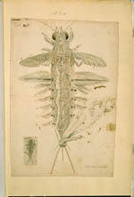

Jan Swammerdam. Icones operis [...] cui titulus Bibliae naturae [...]. 53 platen, bestaande uit etsen en gewassen pentekeningen, van verschillend formaat, opgeplakt op bladen van 385 x 250 mm. Amsterdam, [1675.] -- (BPL 126 B)
'Ik presenteer u ed. alhier den almaghtigen vinger Gods in de anatomie van een luijs.' Zo begint Jan Swammerdam (1637-1680) op 14 april 1678 een brief aan zijn machtige vriend en beschermer Melchésidech Thévenot te Parijs (1620-1692). In die enkele zin ligt de sleutel op Swammerdams latere levensjaren besloten. Aan de ene kant zijn religieuze gedrevenheid, aan de andere kant het probleem hoe een man met zijn talenten zich dienstbaar moest maken.
Zijn leven werd lang beheerst door zijn vader, een dominante apotheker in Amsterdam, die zijn zwaarmoedige zoon het liefst als predikant zag. Toen bij zijn studie in Leiden, Saumur en Parijs zijn ongewone aanleg voor het anatomisch onderzoek uit enkele voortreffelijke publicaties op het gebied van de anatomie en de entomologie was bewezen, bleef zijn vader hem eraan herinneren dat hij op eigen benen zou moeten staan. Swammerdam probeerde zich aan het dilemma te onttrekken, stelde zich zelfs enkele jaren onder de geestelijke leiding van de fanatieke, religieus bevlogen dweepster Antoinette Bourignon (1616-1680) om ten slotte weer naar Amsterdam terug te keren in de hoop zijn levenswerk, de Bijbel der natuur te voltooien. Dat was hem niet gegund. Het boek verscheen pas in 1737, nadat zijn studies, waarbij dit handschrift, in handen waren gekomen van Herman Boerhaave.
Swammerdam was niet alleen een goed anatoom, die een grote vaardigheid ontwikkelde in het hanteren van de microscoop, hij bleek ook een voortreffelijk preparateur. Maar hij onderscheidde zich van de wat oudere Van Leeuwenhoek (zie nummer 86) vooral door zijn tekentalent. De getoonde tekening van de luis op folio 15r van de Icones laat zien hoe zorgvuldig hij zijn waarnemingen eigenhandig kon vastleggen.
Literatuur
- G.A. Lindeboom, The letters of Jan Swammerdam to Melchesedec Thévenot. Amsterdam 1975, vooral brief 19A.
- ‘Jan Swammerdam’. Uitgeg. door L.C. Palm. Themanummer van Tijdschrift voor de geschiedenis der geneeskunde, natuurwetenschappen, wiskunde en techniek, 4 (1981), nr. 2.
| vorige pagina | top pagina |